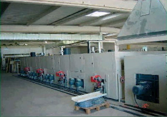

Geotextiles
Definición de geotextiles
Un geotextil es un material textil plano, permeable, de apreciada deformabilidad, formado por fibras poliméricas termoplásticas, que se emplea para aplicaciones geotécnicas (UNE 40-523-88).
Casi todas sus aplicaciones se basan en su capacidad de filtro, es decir, dejar pasar el agua y retener finos. También es importante su alta resistencia a perforación y el espesor de algunos geotextiles en la utilización como protección de geomembranas.
Geotextiles no tejidos de Geotexan NT
Estos geotextiles son no tejidos formados por fibras virgenes 100% de polipropileno unidas mecánicamente por un proceso de agujado con una posterior termofusión, lo que le otorga unas elevadas resistencias mecánicas.
